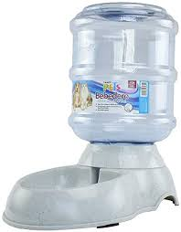
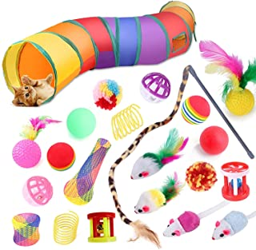
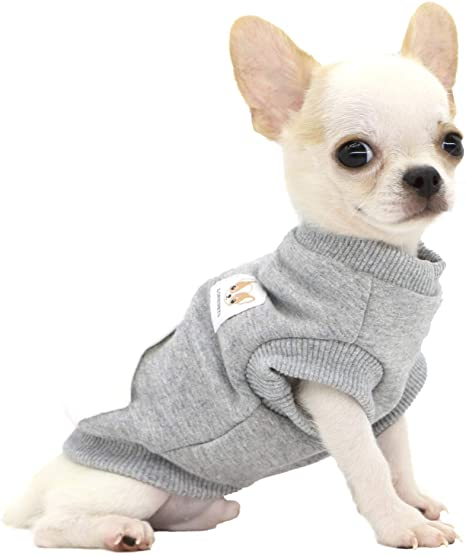

| |
Para ellos es necesario contar con este espacio porque es ahí donde se esconden cuando se sienten tristes, adoloridos o con miedo,
es también donde pueden morder sus juguetes o sus patas sin incomodar a nadie.
 |
El dispensador de comida para perros permite que el animal se alimente en la proporción adecuada según sus características.
De esta forma contribuye a evitar el sobrepeso del perro. Una vez que el perro se acostumbra al dispensador de alimentos, no comerá en exceso
ni se dará atracones peligrosos para su salud.
|  |
Hay bebederos automáticos para mascotas que incorporan filtros de carbón y espuma para depurar el agua. Así, su sabor mejora y se mantiene limpia más tiempo.
Una de las ventajas de las fuentes de agua, es que hacen que ésta conserve un sabor más fresco debido al fluir del agua.
 |
Proporcionan a las aves lugares más seguros para la cría y refugio, disminuyendo la depredación de nidos.
Proporcionan emplazamientos adecuados las especies trogloditas allí donde no los hay oquedades de forma natural.
|  |
El juego y los juguetes son de vital importancia desde los primeros meses de vida del perro, ya que a través de ellos interactúan con el medio,
estimulan su inteligencia y curiosidad, desarrollan su musculatura y se mantienen ágiles y con energía, se estrechan lazos afectivos con los dueños
 |
Una manta para perro es uno de los innumerables objetos y utensilios que se acaban comprando para nuestras mascotas casi junto con el comedero, collar y correa.
Fundamental para que el perro o gato se tape y no pase frío, y para que también sepa cuál es el sitio que queramos que ocupe en nuestra (su) casa.
 |
La finalidad de estos tipos de cepillos para perros es retirar el pelo sobrante, y eliminar la suciedad. Suelen estar diseñados para que el pelo se adhiera con facilidad a ellos.
|  |
cumple la función de calentarlos en invierno y protegerlos de los rayos UVA en verano. En animales mayores, sobre todo aquellos que padecen artrosis,
una buena protección frente al frío evita que se agudice el dolor.
 |
El shampoo para perros es un artículo indispensable para mantener limpio el pelaje de tu mascota. Como ya sabes, cada que está contento se llena de tierra y suciedad. Por lo anterior, y para evitar cualquier problema, además del mal olor, lo más recomendable es bañarlo una vez al mes y cepillarlo todos los días, aunque esto dependerá de cuánto pelo tenga.
Un punto importante es que el pH de la piel de los perros es distinto al nuestro, por eso nunca se debe usar el shampoo para humanos en ellos. Si lo haces, lo más seguro es que le haga daño y le cause varios problemas a corto y largo plazo.
También debes tener en cuenta hechos específicos, por ejemplo, si se le está cayendo mucho pelo, si está mudando el pelaje, o si tiene pulgas. Si ese fuera el caso, además del shampoo, debes llevarlo el veterinario, para que lo revise y te indique el tratamiento correcto.
|
| | | | | | | |